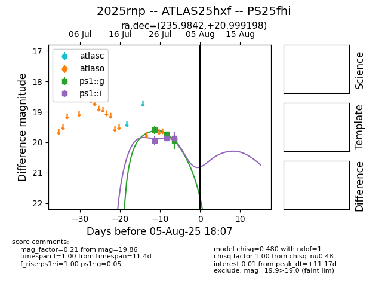

Target 2025rnp at 2025-08-05 18:07, see:
TNS: wis-tns.org/object/2025rnp
YSE: ziggy.ucolick.org/yse/transient_detail/2025rnp
alt names
2025rnp (yse,tns)
ATLAS25hxf (atlas)
PS25fhi (panstarrs)
coordinates:
equatorial (ra, dec) = (235.9842,+20.99920)
galactic (l, b) = (33.6705,+50.33920)
photometry
last ps1::g=19.93, ps1::i=19.86
3 ps1::g, 3 ps1::i detections
